Teatru invizibil / cetățean vizibil
Proiectul “Teatru invizibil / cetățean vizibil”, implementat de
Asociația Culturală Destin și CELĂLALT.teatru și co-finanțat de
Administrația Fondului Cultural Național, se desfășoară în perioada
15 mai - 1 noiembrie 2025 și are ca scop reactivarea conștiinței
sociale, încurajarea inițiativei civice și deschiderea apetitului
populației pentru cultură și actul artistic prin crearea unei serii
de 10 performance-uri de teatru invizibil pentru a fi reprezentate
în spații publice din Arad.
Proiectul dorește de asemenea oferirea de noi perspective în carieră
artiștilor locali care nu activează în domeniu și proaspeților
absolvenți de artele spectacolului, precum și elevilor arădeni care
studiază teatrul la liceu.
Activitățile propuse în proiect doresc să îmbine arta teatrală cu
inițiativa socială prin invitația la dialog despre problemele
comunității și prin încurajarea inițiativei civice a cetățenilor
orașului.
Performance-urile de teatru invizibil propuse în cadrul proiectului
se vor desfășura în locuri publice, în zone centrale dar și la
periferia orașului, în zone special alese pentru a avea un public
cât mai divers, provenind din comunități diferite. Scenariile
performance-urilor vor fi bazate pe situații tipice acestor
comunități, încurajând toleranța față de toți cetățenii orașului și
înțelegerea mai profundă a contextului în care se nasc situațiile
problematice.
Asociația dorește atât prin activitățile propuse în proiect, cât și
prin continuitatea acestora, să stimuleze interesul pentru teatru
experimental și teatru contemporan, folosind subiecte care reflectă
realitatea cotidiană. Prin formarea unui public de teatru alternativ
și prin încurajarea talentelor locale, proiectul dorește să
contribuie la dezvoltarea peisajului artistic local.
Proiectul a început cu ateliere de teatru forum, desfășurate pe 2 și
3 iunie, destinate liceenilor de la Colegiul de Arte Sabin Drăgoi
din Arad, care este partener în acest demers. Ideile dezbătute în
cadrul acestor ateliere, au stat la baza unor scenarii de teatru
scurt, realizate de dramaturg împreună cu o echipă de voluntari.
Scenariile au fost puse în scenă în cadrul unor ateliere de
improvizație și vor fi prezentate pe străzile din Arad, până la
finalul proiectului.
